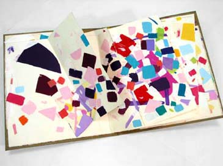
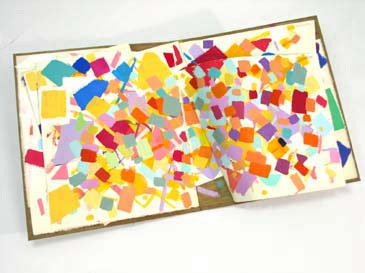
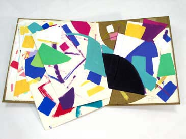
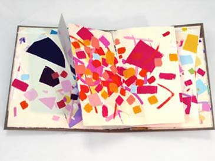
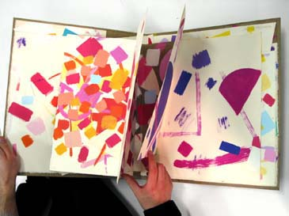
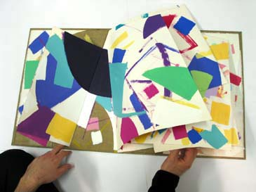

For Niihau from Palestine
An art book by Samia A. Halaby
"This book was created in Honolulu in 1985 while I was teaching at the University of Hawaii, Manoa.
A large installation painting was created at the time of the making of this book and both are
dedicated to the Hawaiian people and to the working-class in Hawaii. This dedication resulted
from my experience as a Palestinian. I know the pain applied to oppressed nationalities. I
needed to express my sentiments in this way so that I could attain a degree of honesty while
enjoying life on the beautiful land of the beautiful Hawaiians."






If you wish to know a bit about my thoughts on painting read "An Aesthetic View."
and/or the essay "Abstraction and Illusion."
To learn about me read the
"Short Biography" or the
"Long Biography" or
"The Resume."
="pointer-events:none;cursor:default;" href="mailto:halabyweb@verizon.net">CLICK HERE to make comments.
Copyright, Samia A. Halaby, 1998, All rights reserved. To request permission to reproduce
any part of these words or pictures ="pointer-events:none;cursor:default;" href="mailto:halabyweb@verizon.net">CLICK HERE.
Select from the following menu representing the entire studio:
Return to Art Books
Return to the very beginning FRONT PAGE of the studio
Kinetic Computer Painting
Go to the HOME IN PALESTINE page....made up of two sections and many chapters
A MENU of the entire studio
="pointer-events:none;cursor:default;" href="http://www.art.net/">![[Art on the Net]](/images/artnet_button.gif)